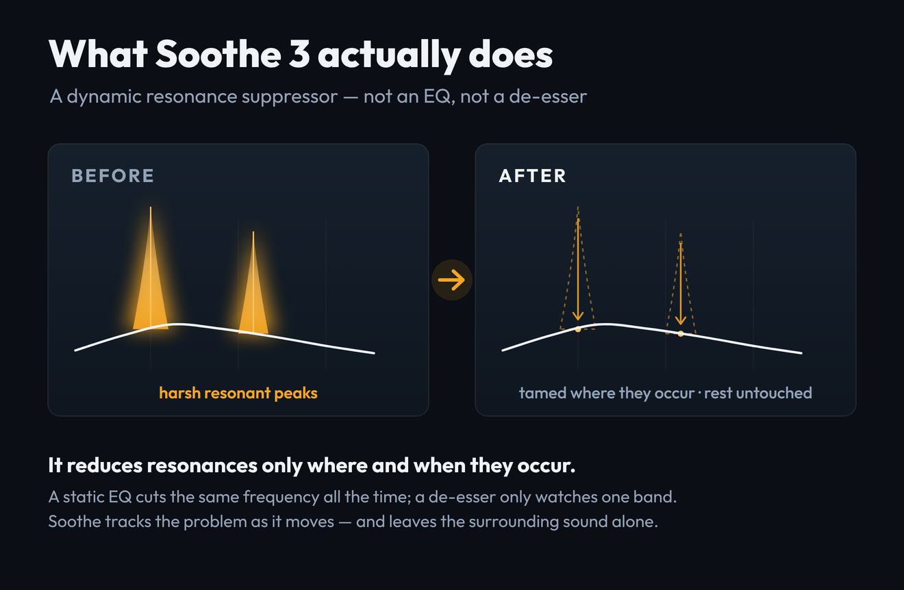
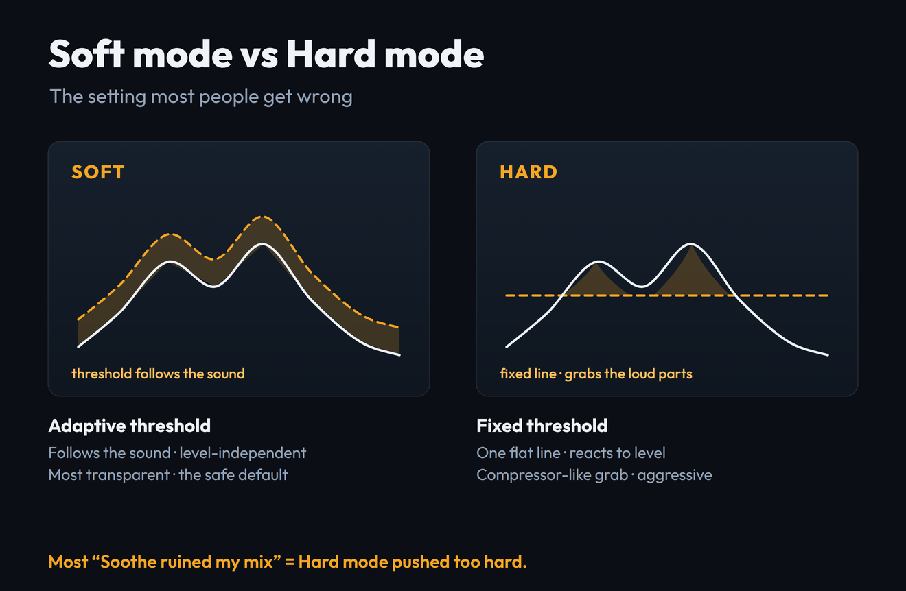
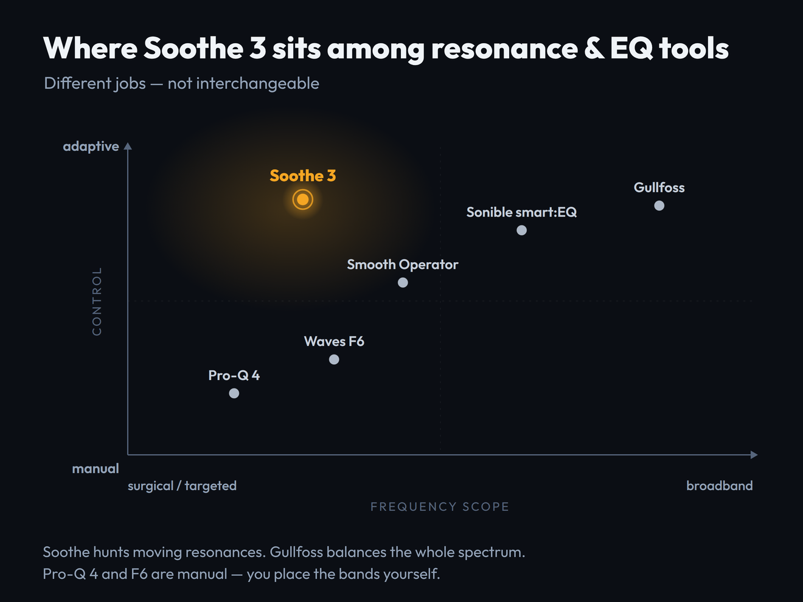

Everyone says Soothe is essential. Open any mixing thread and someone will tell you that you cannot finish a vocal without it. But here is what the launch hype and the affiliate listicles leave out: Soothe 3 costs $259, it is not a de-esser, it is not a magic mix-fixer, and used the wrong way it will quietly suck the life out of your mix. So before you spend the money, let us settle the only questions that matter — what this plugin actually does, what it does not do, and whether you specifically should buy it. oeksound rebuilt the algorithm from the ground up for this release on May 19, 2026, and it is the best the tool has ever sounded. It is also the easiest version yet to misuse.
Soothe 3 is a dynamic resonance suppressor: it hunts harsh, ringing frequencies that move with a performance and ducks them only where and when they occur, leaving everything else untouched. The rebuilt algorithm is genuinely more transparent than Soothe 2, the new Soft mode is a near-foolproof starting point, and a zero-latency mode finally makes it usable while tracking. It is the best tool in its class — but it is a scalpel, not a fixer. If your problem frequency sits still, a manual dynamic EQ like Pro-Q 4 does the job for less. Buy Soothe 3 if you mix harsh, dynamic sources (vocals, cymbals, distorted guitars) often enough that hunting them by hand is costing you time. If you reach for that kind of move once a month, the $259 is hard to justify when a $55 upgrade or a cheaper alternative exists.
- ✅ Rebuilt algorithm is noticeably more transparent — a wider sweet spot, fewer artefacts when pushed
- ✅ Soft mode is a near-foolproof, level-independent default that is hard to get wrong
- ✅ Tracks moving resonances no static or manual EQ can follow — its one genuine superpower
- ✅ Zero-latency mode finally makes it usable while tracking and live
- ✅ Free nodes, eight band shapes, tilt, max cut and linear phase — the deepest control set in the class
- ❌ $259 is a real ask next to Gullfoss ($199), Pro-Q 4 ($179) and Smooth Operator (~$69)
- ❌ Easy to over-process, especially in Hard mode — most "Soothe ruined my mix" stories start here
- ❌ It is a real-time analyzer; expect meaningful CPU on busy sessions
- ❌ Not a de-esser and not a fix for static problems — the wrong tool for those jobs
Best for: Mixing and mastering engineers who regularly tame harshness on dynamic sources — vocals, cymbals, acoustic instruments, distorted guitars — and want the most transparent, hands-off way to do it.
Not for: Anyone whose problem is a fixed frequency, a sibilant "s", or an occasional cleanup — a dynamic EQ, a dedicated de-esser, or a cheaper suppressor will serve you better.
| Axis | Score | Why |
|---|---|---|
| Transparency (sound) | 9.2 | The rebuilt engine is genuinely cleaner; class-leading on moving harshness when used with restraint. |
| Precision & control | 9.0 | Free nodes, eight band shapes, tilt, max cut and two real modes — the deepest toolkit in the category. |
| Workflow & speed | 8.6 | Detail consolidation, a collapsible panel and a scalable GUI speed it up; the advanced controls still have a curve. |
| Versatility | 8.7 | Now mix, master, tracking, live and up to 9.1.6 immersive — one tool covering jobs it used to sit out. |
| Value | 7.2 | $259 new is steep beside the field. The $55 upgrade and the free grace period are the real bargains. |
| Overall | 8.7 | The category leader on sound and control — held off a 9 by price and the truth that it is a scalpel, not a fixer. |
Scored on oeksound's published specifications, the May 2026 manual, and the consensus of hands-on reviews and long-term Soothe users — not a first-party bench test of its processing. We have not yet measured Soothe 3's before/after on our own source files; when we do, this section will carry the real spectra. Prices verified against oeksound.com and each competitor on June 16, 2026.
What Soothe 3 Actually Is (and Isn't)
Soothe is a dynamic resonance suppressor. That phrase does a lot of work, so let us unpack it, because almost every bad Soothe purchase comes from misunderstanding it. A resonance is a frequency that rings louder than the ones around it — the harsh edge on a bright vocal, the "ring" on a snare, the nasal honk on an acoustic guitar, the ice-pick on a cymbal. The trouble is that these peaks rarely sit still. As a singer moves through a phrase, the harsh frequency slides; as a guitarist digs in, a different resonance flares up. The peak is a moving target.
That is the exact problem Soothe was built to solve. It analyses the incoming signal continuously and applies a matching cut only where and when a resonance appears — then gets out of the way the instant it passes. It is not painting a fixed curve onto your sound. It is chasing the problem as it travels.

This is why Soothe is not interchangeable with the tools it gets compared to. A static EQ cuts the same frequency all the time, whether the resonance is present in that moment or not — so to tame a peak that only flares occasionally, you end up gouging a permanent hole in the tone. A de-esser watches a single band for sibilance and does nothing elsewhere. A manual dynamic EQ (Pro-Q 4's spectral mode, Waves F6) can react to level on a band you choose — but you have to find and place every band by hand, and it will not chase a resonance that drifts across the spectrum. Soothe's job is the one none of those do cleanly: track many moving resonances at once, automatically.
Now the three things Soothe 3 is not, stated plainly so you do not buy it for the wrong reason. It is not a de-esser — it can reduce sibilance as a side effect, but a dedicated de-esser is faster and more controllable for that one job. It is not a "make my mix better" button; point it at a balanced source and it will find almost nothing to do. And it is not a substitute for fixing problems at the source — a badly recorded vocal in a bad room is a job for better tracking or a restoration tool like iZotope RX, not for a resonance suppressor. If you are new to all of this, our primer on what EQ actually does is the right place to start before you spend $259 on a specialist.
Soft Mode vs Hard Mode: The Thing Everyone Gets Wrong
If you remember one thing from this review, make it this section. The single most common reason people say "Soothe ruined my mix" is that they left it in Hard mode and pushed it, when they wanted Soft mode all along. oeksound separated the two modes far more distinctly in version 3, and understanding the difference is the difference between a transparent result and a lifeless one.

Soft mode uses an adaptive threshold. In practice that means it is almost completely level-independent: turn the input up or down and the amount of suppression barely changes, because the mode is tracking the shape of the resonance rather than its loudness. This is the most transparent processing oeksound has ever shipped, and it is the safe default for the overwhelming majority of work — vocals, acoustic instruments, orchestral material, full mixes, anything dynamic. Set it, pick a sensible Depth, and it is genuinely hard to make it sound bad.
Hard mode is the Soothe 2-style behaviour: a fixed threshold that reacts to input level, much like a compressor. Push a loud transient into it and it grabs hard; back off and it lets go. That makes it the right tool for aggressive, deliberate control — clamping a screaming lead, sidechaining the suppression to another source, or using Soothe as a creative effect rather than a corrective one. It is powerful, and it is also where the over-processing horror stories live, because a fixed threshold plus a heavy hand on a dynamic source produces audible pumping and that hollow, over-soothed sound everyone fears.
Start in Soft mode. Reach for Hard mode only when you specifically want compressor-like, level-reactive grab — aggressive control, a sidechain trick, or a creative effect. If you are not sure which you want, you want Soft. Most "Soothe sounds bad" verdicts are Hard mode used as if it were Soft.
oeksound's own framing is blunt about it: Soft mode is for dealing with resonances, and Hard mode behaves more like a compressor. Treat them as two different processors that happen to share a window, and the plugin stops fighting you.
Does It Actually Deliver?
The headline claim from oeksound is simple and a little maddening to verify: it "simply sounds better." Product lead Aleksi Taipale describes the DSP as redesigned and significantly more transparent in everyday use, with a wider sweet spot that makes fast, confident moves safer. Strip the marketing and there is a real, testable claim underneath: the new engine introduces fewer audible side effects for the same amount of reduction, so you can work quicker without babysitting it.
On the weight of hands-on reviews and long-term-user reports since the May launch, that claim broadly holds. The consistent finding is that the rebuilt algorithm is more forgiving — it leaves less of the "over-soothed," slightly phasey residue that Soothe 2 could produce when pushed, and the larger sweet spot means a setting that is roughly right tends to sound good rather than fragile. Reviewers repeatedly single out the new Detail control on vocals as making the processing feel more surgical without sounding pinched. None of that is hype; it is the same upgrade described from a dozen different chairs.
We have not yet run Soothe 3 through our own measurement pipeline. To measure a processor properly we need the plugin running on a real source with a matched dry/wet capture — and we publish only measurements we actually take, never an illustrative "before/after" dressed up as data. The mechanism above is accurate; a first-party measured spectrum will be added here once we have bounced a real pair of files. Treat this section as informed analysis, not a bench test.
The honest verdict on "does it deliver": yes, at what it is for. Point Soothe 3 at a genuinely harsh, moving source and it does something no EQ move can replicate as cleanly — it removes the harshness and leaves the character. Point it at an already-balanced source and it correctly does almost nothing, which is the right behaviour and also the moment a lot of buyers feel disappointed. The plugin is delivering; the source just did not need it. That gap — between what Soothe can do and what your material actually requires — is the real subject of the rest of this review.
The Controls That Actually Matter
Soothe 3 looks busy, but day to day you touch a handful of controls. Here is what each one really does and what to reach for first.
| Control | What it does — and how to use it |
|---|---|
| Depth | The master amount of suppression. This is the one knob you will move most. Find the setting where the harshness goes and the life stays, then back off a hair. Soothe rewards less than you think. |
| Detail | New in v3, it merges Soothe 2's Sharpness and Selectivity into one control. Higher values mean deeper, narrower, more surgical cuts; lower values are broader and gentler. The single biggest workflow improvement — on vocals, a touch more Detail tightens the processing without pinching it. |
| Soft / Hard | The mode switch covered above. Soft for transparent correction, Hard for compressor-like grab. The most consequential control in the plugin. |
| Nodes & band shapes | Soothe 2's six fixed bands are gone. You now create and delete nodes freely, with eight band shapes including bandpass and tilt, to focus the processing on the region that actually rings — or to protect a region you want left alone. |
| Tilt | Scales Detail, Attack and Release frequency-dependently, so the low end and the high end can behave differently without running two instances. Useful when the lows need a gentle touch and the highs need a faster, sharper one. |
| Max cut | Lets you drive Soothe harder while capping the size of the biggest cuts — more overall action without any single notch going too deep. A safety net for aggressive settings. |
| Linear phase | Phase-linear processing for parallel chains or unlinked mid/side work, where ordinary processing could shift the stereo image. A mastering-grade option; leave it off for everyday mixing to save CPU. |
| Low latency | Adds zero samples of latency at base sample rates (about 1 ms higher up), which makes Soothe usable while tracking and live — genuinely new territory for this plugin. |
The practical workflow is unglamorous and almost always right: stay in Soft mode, raise Depth until the harshness is gone, nudge Detail to taste, and only place nodes if a specific region needs focus or protection. Everything else — tilt, max cut, linear phase — is there for the harder jobs, not the daily ones. If you find yourself deep in the side panel on a routine vocal, you are probably overthinking it.
Where It Shines — and Where It's the Wrong Tool
Soothe earns its reputation on a specific family of sources, and it is worth being precise about them, because the same precision tells you when to put it down.
The flagship use case. Harshness and the upper-mid "edge" that moves through a performance is exactly what Soothe tracks best. Pair it with your chain in our advanced vocal mixing guide.
Ringing, splashy resonances that flare on accents — a moving target a static cut cannot follow without dulling the whole kit.
Heavy distortion piles up harsh harmonics that shift with the riff. Soothe tames the ice-pick without flattening the aggression.
Boxy honk on acoustic guitar, nasal resonance on strings — Soft mode's transparency shines on dynamic, organic sources.
It also has real value on a bus or master in tiny amounts — a hair of Soothe across a mix to shave collective harshness — though that is a job Gullfoss arguably does more naturally, and one where restraint matters most. For the full vocal toolkit beyond resonance, our best plugins for vocals roundup puts Soothe in context with the de-essers, compressors and saturators around it.
Now the wrong-tool cases, stated as plainly as the right ones. If your problem is a single fixed frequency — a consistent 3 kHz ring on a snare, a constant room mode — a dynamic EQ band does it more cheaply and more controllably; you do not need Soothe's tracking for a target that never moves. If your problem is sibilance specifically, a dedicated de-esser is faster and more transparent. If your problem is noise, clicks, hum or a bad room, that is restoration, and a tool like RX is the right answer. And if your source is already balanced, Soothe will sit there finding nothing — which is not a fault, but it is $259 doing very little. The discipline of knowing when not to insert it is most of what separates engineers who love Soothe from those who blame it.
The Honest Weak Points
No tool this expensive should get a free pass, so here are the real reservations, the ones the launch coverage tends to skip.
It is easy to over-process. This is the big one. Soothe's whole premise — remove the bad frequency — tempts you to remove more than the source needs, and a little too much Depth, or Hard mode used carelessly, produces a thin, hollow, slightly lifeless result. The rebuilt engine is more forgiving than Soothe 2, but it has not repealed the laws of taste. Restraint is a skill you have to bring; the plugin cannot supply it.
It costs CPU. Soothe is a real-time spectral analyzer, and that is not free. On a track or two it is fine on any modern machine, but stack instances across a large session and you will feel it. The new low-latency mode helps for tracking but does not change the fundamental load of the analysis.
The competition is genuinely stiff now. When Soothe 2 launched it had the category mostly to itself. In 2026 it does not. Gullfoss, Pro-Q 4's spectral dynamics, Baby Audio's Smooth Operator and Sonible's smart:EQ all overlap parts of what Soothe does, several of them for less money. Soothe is still the best at its specific job, but "best" now comes with an asterisk and a price gap.
And it is, finally, $259. That is a real ask for a corrective plugin that, used well, you will often barely hear. The value is real for the right engineer; it is genuinely poor for someone who will reach for it occasionally. The honesty is the whole point: this is a specialist tool, priced like a flagship, and whether that math works is entirely about how often you do the work it is built for.
The Real Cost — and the Cheaper Alternatives
At $259 (€229 / £199 including VAT), Soothe 3 is priced at the top of its category, so the only fair way to judge the cost is against what else $259 could buy you — and what jobs those tools actually do. The positioning map below is the argument in one picture: these tools are not substitutes for each other, they are different instruments.

| Tool | Price (2026) | What it really is | Buy it instead when… |
|---|---|---|---|
| oeksound Soothe 3 | $259 | Adaptive dynamic resonance suppressor — hunts moving harshness automatically | You regularly tame harshness on dynamic sources and want the most transparent, hands-off result |
| FabFilter Pro-Q 4 | $179 | Manual surgical EQ with spectral-dynamic bands — you place every band | Your problem is a fixed frequency, and you want one EQ that also does everyday tonal work |
| Soundtheory Gullfoss | $199 | Broadband spectral balancer for the whole mix — not a targeted hunter | You want a "make the master clearer" tool, not surgical resonance control |
| Baby Audio Smooth Operator | ~$69 | Cheaper resonance suppressor — more limited, less transparent | You want most of the Soothe idea for a quarter of the money |
| Waves F6 | Often under $50 on sale | Six manual floating dynamic-EQ bands with sidechain — fully manual | You are on a budget and happy to find and place the bands yourself |
The takeaway most affiliate roundups will not give you: Pro-Q 4 and Gullfoss are not "Soothe but cheaper" — they are different tools. Even FabFilter's own reviewers note that Pro-Q 4, for all its spectral power, will not replace Soothe or Gullfoss for resonance suppression. If your problem is moving harshness, the honest pecking order is Soothe 3 first, Smooth Operator as the budget stand-in, and F6 if you are willing to work manually. If your problem is anything else, one of the cheaper tools is not a compromise — it is the correct buy. For the wider picture of where Soothe sits among modern smart-processing plugins, see our best AI mixing plugins of 2026 hub.
Soothe 2 to Soothe 3: Should You Upgrade?
If you already own Soothe 2, your decision is different from a new buyer's, and oeksound has made it unusually generous — so check the free path before you pay anything.
One migration note worth knowing: your Soothe 2 .preset files open natively in Soothe 3, but because the engine and parameters changed — Sharpness and Selectivity merged into the new Detail control — they will not sound identical out of the box. Expect to retune Depth and Detail on imported patches. That is a small price for not losing a custom library, but do not assume your old settings transfer one-to-one.
Who Should Buy It (and Who Shouldn't)
Strip away the hype and the buying decision comes down to one honest question: how often do you actually need to chase moving harshness?
There is no shame in the "wait" or "skip" rows. Soothe 3 is an exceptional tool that a lot of producers do not need, and the most expensive mistake in plugins is buying a flagship for a job a $50 tool would do. The 20-day trial exists precisely so you do not have to take anyone's word — including ours.
Is Soothe 3 Worth $259?
For the engineer it is built for — someone taming harsh, dynamic sources on most sessions — yes, comfortably. It is the most transparent, most capable tool in its category, the rebuilt engine is a real step up, and the time it saves over manual resonance hunting is the kind of compounding return that justifies a flagship price. For that person, this is an easy 8.7 and an easy buy.
For everyone else, the answer is "probably not at full price." If you own Soothe already, the $55 upgrade or the free grace period changes the math entirely. If you do this work only occasionally, Smooth Operator or a dynamic EQ gets you most of the way for a fraction of the cost. And if your real problem is a fixed frequency, sibilance or a bad recording, Soothe is simply the wrong tool, however good it is. The plugin earns its score; whether it earns your $259 depends entirely on how often you need exactly what it does. Trial it on your hardest source, in Soft mode, and the decision will make itself.
Try It Yourself: 3 Resonance Exercises
These work in the Soothe 3 trial, or in any dynamic EQ you already own — the skill matters more than the brand.
- Load a raw, slightly harsh vocal — an unpolished take is perfect.
- Insert Soothe 3 in Soft mode and slowly raise Depth while the vocal plays. Listen for the moment the harshness leaves but the voice still sounds like itself.
- Push Depth too far on purpose, until the vocal goes thin and lifeless. Now you know both edges of the range — the useful setting lives just before that point.
- On the same vocal, find a Depth in Soft mode that sounds right and note it.
- Switch to Hard mode at the same Depth and play the loudest and quietest phrases. Hear how Hard mode grabs harder on the loud parts and lets go on the quiet ones — that level-reactivity is the whole difference.
- Decide which the source wanted. For most vocals it is Soft; prove it to your own ears so the choice stops being guesswork.
- Bounce eight bars of your harsh source dry, then bounce the same eight bars with Soothe set the way you would actually use it.
- Run both files through our free Mix Fingerprint tool and compare the high-frequency balance — you should see the harsh region come down without the rest of the spectrum collapsing.
- If the whole top end dropped, you over-processed. Pull Depth back and repeat until only the problem region moves. That is what "transparent" looks like as data.
Frequently Asked Questions
For engineers who regularly tame harshness on dynamic sources — vocals, cymbals, distorted guitars, acoustic instruments — yes. The rebuilt algorithm is the most transparent Soothe yet, and it does something no static or manual EQ can: track moving resonances automatically. For occasional use, or for fixed-frequency problems, a dynamic EQ or a cheaper suppressor is the smarter buy. It earns its 8.7; whether it earns your $259 depends on how often you do the work it is built for.
Soothe 3 is $259 (€229 / £199 including VAT) new, direct from oeksound, with a rent-to-own option available. Owners of any previous Soothe perpetual license can upgrade for $55 (€50 / £45). There is also a free grace-period upgrade for anyone who bought a perpetual or upgrade Soothe 2 license between February 18 and May 19, 2026. A fully featured 20-day trial is available before you buy.
Soft mode uses an adaptive threshold and is almost completely level-independent — it is the most transparent option and the safe default for vocals, acoustic and dynamic sources. Hard mode uses a fixed threshold that reacts to input level, behaving like a compressor; it is for aggressive control, sidechaining and creative effects. Most complaints that "Soothe ruined my mix" come from using Hard mode where Soft mode was wanted. When in doubt, use Soft.
No. Soothe 3 is a dynamic resonance suppressor, not a de-esser. It can reduce sibilance as a side effect because sibilance is a kind of resonance, but for de-essing specifically a dedicated de-esser is faster, more controllable and more transparent. Buy Soothe for moving harshness across the spectrum, not as a sibilance tool.
They do different jobs. Soothe 3 is a targeted resonance hunter that ducks specific moving harshness; Gullfoss ($199) is a broadband spectral balancer that gently rebalances the whole mix, typically on a bus or master. If your problem is harsh resonances on individual sources, buy Soothe. If you want a "make the master clearer" tool, buy Gullfoss. Many engineers own both and use them for opposite ends of the process — they are complementary, not competing.
If you use Soothe weekly, yes — the $55 upgrade buys real transparency gains, the new Detail control and low-latency tracking. If you bought a Soothe 2 license between February 18 and May 19, 2026, check the grace period first; you may qualify for a free upgrade. If you open Soothe rarely, version 2 still works fine and your presets still load, so there is no urgency. Trial version 3 before deciding.
Yes, which is new. Soothe 3's low-latency mode adds zero samples of latency at base sample rates and about 1 ms at higher rates, making it viable while tracking and in live contexts — something previous versions, aimed at mixing and mastering, could not do. It runs as VST3, AU and AAX on Windows 10 and up and macOS 10.14 and up, needs a free iLok account (no dongle), and one license covers three machines.
Almost always one of two reasons: too much Depth, or Hard mode used where Soft mode was wanted. Soothe rewards restraint — pushed too far it removes character along with harshness and leaves a thin, hollow result. Start in Soft mode, raise Depth only until the harshness goes, then back off slightly. If the whole top end has dulled, you have over-processed. The tool is transparent when used gently and destructive when used heavily; the skill is knowing where to stop.